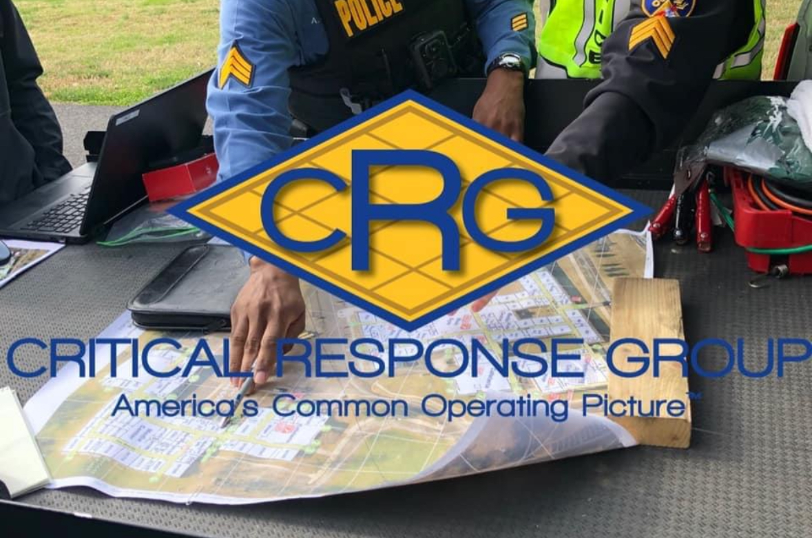
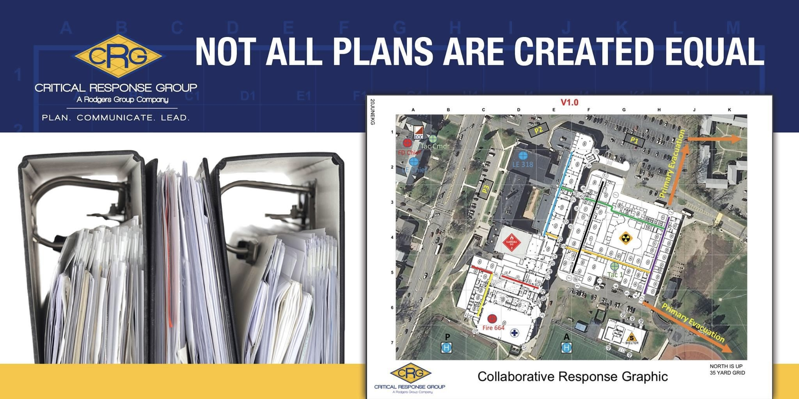
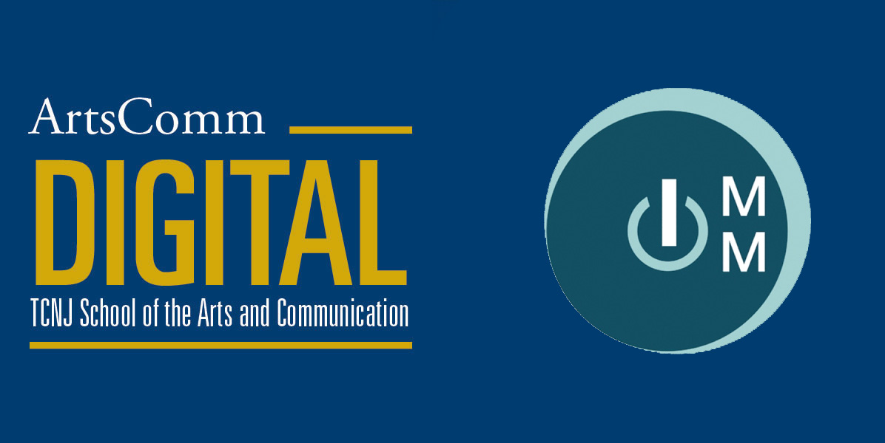

Copyright © 2025 Dustin Guillemin. All rights reserved.
Hi, I'm Dustin!
A Creative Designer Dreamer Problem Solver
I'm a Product Designer with 5+ years of experience
- Nice to meet you!
Dustin Guillemin
Product Designer & UI Scupltor UX Dreamer VisonaryHello there! My name is Dustin Guillemin. I am a product designer who takes pride in producing high-quality user experiences that focus on human-centered design and user needs.
With 6+ years experience, I have acquired the skills and knowledge necessary to make meaningful impacts in a variety of markets. While i continue to grow, I enjoy leading design that has is a mutual benefit to society, users, and the business.
- Age 28
- Born In New Jersey, USA
- Mail Contact me
- Linkedin Connect with me
-
6+
Years of real world experience -
50+
Features built or supported -
11M
Subscribers interacting with my designs -
0
Cups of coffee consumed
-Experience
Making a meaningful impact
-
-Jan 2022 - Present
Product Designer
-Synchronoss TechnologiesWorking to design, develop, and implement a high quality personal cloud experience for users around the globe.
Synchronoss Technologies is a global leader in personal cloud solutions, focused on fostering subscriber engagement. Millions of subscribers trust Synchronoss to safeguard their most cherished memories and important digital content.
At Synchronoss, we take pride in creating a safe, secure, and enriching cloud backup and storage solution. Each design is approached with user empathy, allowing us to cultivate a simple yet effective application. I have been central to supporting and leading multiple features that refine our user experience, helping generate user engagement and retention year over year.
Working in the evolving SaaS space, Synchronoss strives to be an innovator. Our design led, feature rich application continues to be a world class personal cloud leader. This well rounded environment has allowed me to continue growing my design skills while building strong stakeholder relationships.
-

-Jan 2019 - Dec 2021
Design Manager
-Critical Response GroupLeading designers on a mission to produce user friendly products for users in high stress, dangerous environments.
In my role as a Design Manager, I lead a cross functional teams of product designers with varying skill level in both day-to-day and big picture digital projects. In addition, I collaborated directly with our company CTO and COO to innovate time saving practices and digital design concepts, all in the pursuit of making the best products for our clients.
While maintaining a foothold as a designer leading daily initiatives, I gained valuable experience in mentoring junior designers. I influenced product design processes and deliveries, and was integral in helping the company see a 92% revenue increase from 2019 to 2020.
-

-Nov 2017 - Dec 2018
Product Designer
-Critical Response GroupSpearheading innovation in a brand new product space to create "Americas Common Operating Picture."
While balancing my Supervisor role, I still contributed daily as a Product Designer. I built effective products while maintaining digital assets for our product range that were crucial to rapid product design. Working through the iterative design process I brought products from conception through final delivery efficiently, never sacrificing quality or crucial components.
Critical Response Group is revolutionizing the concept of digital emergency management products. In 2017, I joined a dream team of young designers who would be known as the "core four" who were tasked with breathing life into the idea. While concepts existed, we would put the design of the product on our backs, and together we established the design systems, rules, and features that would become the beating heart of CRG.
-

-Oct 2019 - Dec 2019
Adjunct Professor
-The College of New JerseyGiving back to my Alma Mater through mentorship as an Adjunct Professor in the Interactive Mulitmedia department.
I returned to The College of New Jersey after graduation to teach a course guiding designers and non-designers alike. In this open topics course, I further developed skills in teaching concepts to individuals with mixed educational backgrounds.
Additionally, time management, documentation, and presentation were critical to relaying digestible information. I was fortunate to learn and grow while sharing my real world knowledge with bright collegiate minds. These skills continualy impact my design and management style outside of the classroom.
-Skills
Get in touch
My skills
-

Brainstorming. Planning, design, and testing. A product can be born without these, but its success hinges on its evolution throughout the iterative design process. Teams working together to ideate, design, and implement like a well-oiled machine turn visions into working products that can change the world.
There is more to designing than just pushing pixels. While we often emphasize the beauty and craft of UX design, it is important to remember there is so much more. If design decisions are not rooted in understanding user behavior, how can we expect them to succeed? UX means going beyond the screen and digging deeper into what a user wants, needs, and even things they might not know they need to
-

-

Making an application that works across all platforms is imperitive in the modern digital era. However, 80% of the world is using smartphones, and mobile apps are the most effective platform for delivering products. Designing for native platforms like Android and iOS reduces capactiy on all teams, allowing for more efficient design and engineering.
Taking advantage of natively managed components helps us design cohesive solutions across platforms without having to support custom elements. Furthermore, users value familiarity and consistency when our apps work the same as their platform of choice, making for a superior user experience.
-

Users hold the power in whether or not a product is successful. As designers, sometimes we need to look beyond the customer and see who is behind the interactions. If we only ever quantify them as heat maps or metrics, we will fail to increase engagement, retention, and satisfaction.
Without our users we have no product. It is paramount that we research, design, test, and repeat if we want our users to feel comfortable and confident. Our ability to do so hinges on performing studies to collect data that will influence how we shape our experiences.
-

-

"The only thing worse than a bad decision is continuing with a bad decision." Sometimes even the best of us make mistakes or get stuck, but with good guidance anyone can succeed. If there is one aspect of work I take the most pride in, it is leading an energetic team that is willing to respect their peers and work hard to deliver meaningful products.
- Projects
Recent completed works
-
We live in a world where looking back at our precious memories is a cherished activity. We also want our experiences when reflecting on these moments to be celebrated and warm. The Memories feature within Personal Cloud is dedicated to allowing users to view, share, and celebrate all of the incredible moments they capture and store.
As the lead designer for Memories, I have put all of my energy into this feature. It is currently evoloving throughout 2024 to be our largest anchor feature of the year, incorportating a web-based solution into our native platform while existing as a standalone PWA feature as well. This has been a complex challege, since both designs need to match seamlessly so users do not feel they have actually left the native experience. Load times, menu items, and backend handoffs have all been problems, but I have worked with the POs and Developers to solve each one efficiently.
The desirability for this feature is high, and similar experiences can be found in many photo backup apps already. We set our sights on immersing users into the good old days every time they visit this feature, with key details like slideshow, autoplay next, and easily available actions like manage/share/download. This feature continues to show strong signs of improving engagement and retention of users, allowing our roadmap to promote it to the apps global navigation and further amplify its use.
- Company Synchronoss Technologies
- Category Personal Cloud
- Date Fall 2023-2024
-
Explore provides the gateway to interacting with a variety of users content. With the introduction of this feature, all users have a central hub for accessing search, people, places, tagged content, and more.
This feature was an anchor feature for Synchronoss in 2023, and required extensive refinement with key stakeholders internally and with our largest customer, Verizon. Before the introduction of Explore, metrics showed users were not engaging with a variety of content types. We learned that without proper tagging support there was little function for search, and as a result content was being missed. Working as the lead designer with input from our Senior Design Manager, we designed this feature to address all outlying problems.
As one of the largest features designed and implemented in the last 5 years at Synchronoss, we worked tirelessly to produce a cohesive native experience alongisde a PWA web version. Despite significant input from stakeholders, we were able to deploy this feature by the end of 2023 and meet our timeline with the final release of the year. This project required extreme time management and collaboration, and while it was deemed a huge success, next time it would be much smoother if communication happened earlier with our external stakeholders. Additionally, working with native and PWA teams in silos was a mistake, and current projects are proving to be more streamlined with joint conversations happening right from the start.
- Company Synchronoss Technologies
- Category Personal Cloud
- Date 2023
-
Working with large amounts of user content presents complex challenges, including the potential for bad actors and corruption. In the event of malware interference or a massive file corruption, BackTrack has you covered. Working with a talented team of desktop developers, we built and implemented this unique feature.
This feature accomplished the goal of allowing users affected by any issues within their repositories to "backtrack" a certain amount of time and recover lost or damaged files. Over the course of one PI, I worked with a team of desktop developers, and sought input from a variety of stakeholders with legal and technical expertise.
To create the best UX, I did competitive analysis on what existed in the marketplace currently. Through this, I learned what was necessary for success, including appropriate steps and reassuring tones to help users understand the highly technical process. This feature would ultimately become an anchor feature that we sold to our Tier 1 customers, and I became the lead designer for all desktop features due to the success of this project.
- Company Synchronoss Technologies
- Category Personal Cloud
- Date Spring 2022

- Let's Connect
Get in touch
I'm always looking for my next challenge, so feel free to send me a message if you think I'd be a good fit on your team.